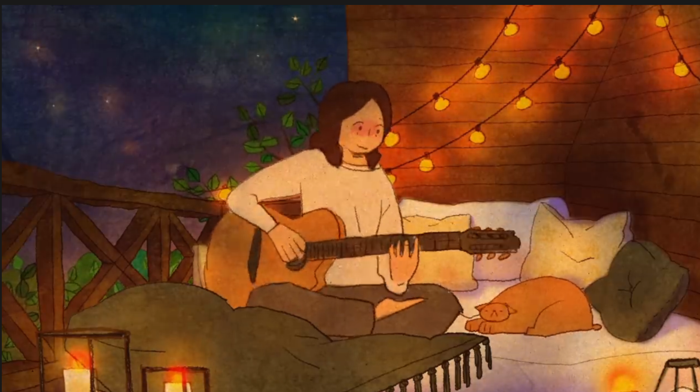

项目一：AIGC 跑团人生模拟游戏
本项目基于 AIGC 思路设计一款跑团式人生模拟游戏。 玩家可以在不同人生设定中进行探索，通过“改命”机制影响剧情走向， 并支持多人协作体验。
📥 项目文件下载（网盘）

项目二：程序生成内容（PCG）关卡实验
该项目聚焦于程序生成内容（PCG）， 使用进化算法与生成模型探索关卡自动生成方案， 并对比传统 PCG 与基于 GAN 的方法差异。
📥 实验数据与代码下载个人项目展示 · 资源下载 · 视频演示
本项目基于 AIGC 思路设计一款跑团式人生模拟游戏。 玩家可以在不同人生设定中进行探索，通过“改命”机制影响剧情走向， 并支持多人协作体验。
📥 项目文件下载（网盘）该项目聚焦于程序生成内容（PCG）， 使用进化算法与生成模型探索关卡自动生成方案， 并对比传统 PCG 与基于 GAN 的方法差异。
📥 实验数据与代码下载